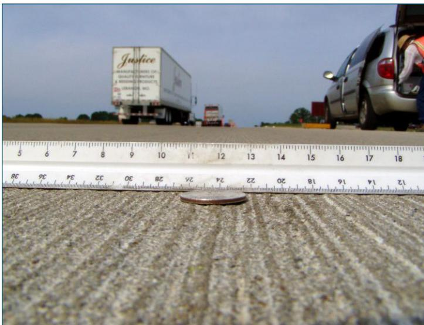
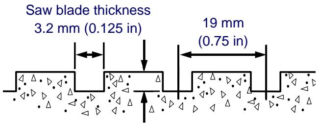
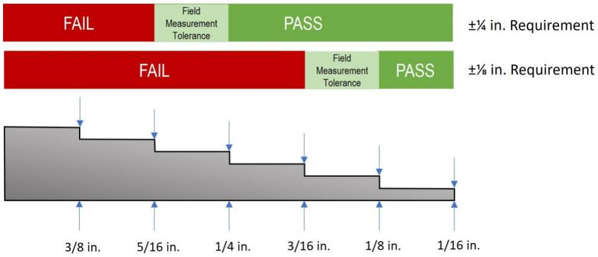
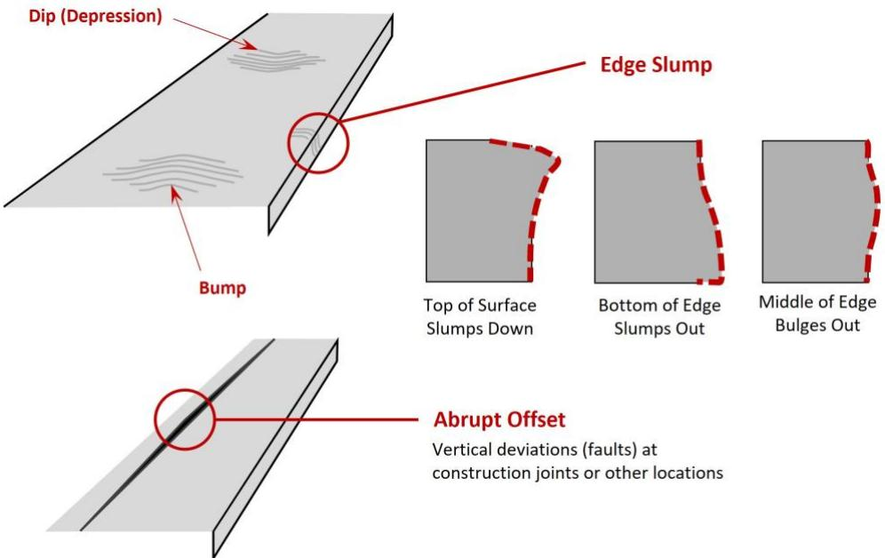
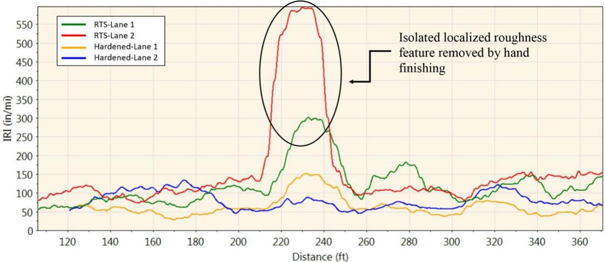

Diamond Grooving Texture Control
Diamond Grooving Texture Control is a quality‑assurance process applied to newly cured concrete airport and other Portland‑cement pavements that verifies the geometric characteristics of diamond‑ground grooves—width, depth, spacing and alignment—and their uniform placement across the wheel path to provide the required macro‑texture for water drainage, skid resistance and reduced hydroplaning【1](#ref-1)[2]】. The control regime requires that at least 95 % of any 1 m × 30 m test strip be textured, that groove dimensions stay within FAA tolerances (e.g., 1/8 in ± 1/64 in width, 1/4 in ± 1/16 in depth, 1½ in ± 1/8 in spacing), that pass overlap not exceed about 50 mm and incremental depth increase be limited to roughly 6 mm, while continuous monitoring of smoothness via the International Roughness Index and daily measurements (≥ three per day per cutting head across five transverse zones) ensures compliance with ride‑quality and noise criteria【3](#ref-3)[4][5]】. When any measured parameter falls outside these limits—such as excessive IRI, out‑of‑tolerance groove dimensions, surface spalling, or ponding depressions—corrective actions including blade adjustment, additional grinding or segment replacement are triggered and documented in daily logs【5](#ref-5)[1]】.
Sources (5)
Purpose and quality objectives
Diamond Grooving Texture Control evaluates and controls the pavement surface texture produced by diamond grinding. It assesses the geometric characteristics of the grooves—width, depth, spacing, and alignment—and their uniform placement across the wheel path to provide the required macro‑texture for water drainage and skid resistance. The control also monitors the as‑constructed smoothness or functional standard of the texture, which influences tire‑pavement noise and long‑term durability. Workmanship criteria include limiting overlap between adjacent passes (typically no more than 50 mm/2 in), restricting incremental depth increase to about 6 mm (0.25 in), ensuring grinding wheels remain true with minimal vibration, maintaining a continuous corduroy texture that covers at least 95 % of any 1 m × 30 m test strip across the full lane width, and providing uniform transverse slope to prevent ponding. Finally, ride‑quality performance is tracked by the International Roughness Index (IRI); when IRI exceeds a prescribed threshold corrective grinding or other remedial action is required. [1][2][3][4][5]
The following figure illustrates the deep and uniform striations achieved through proper drag texture.

Close-up of a coin and ruler on grooved concrete pavement with highway traffic in the background. [2]The image displays a close-up view of a concrete surface featuring deep, uniform longitudinal striations running parallel to the direction of travel.
[1] — Ch. 5 (pp. 279–280); [2] — 2 Overview of Concrete Pavemen… (p. 23); [3] — Ch. 3 (p. 61), Ch. 9 (pp. 224–229); [4] — Ch. 9 (pp. 187–190); [5] — Corrective Action Requirements (p. 16)
Diamond‑grooving texture control is intended to verify that the finished pavement satisfies all functional and safety specifications for macro‑texture, drainage, friction, smoothness, noise, and dimensional consistency. Across the guides the required quality elements include: (1) achieving the prescribed groove geometry—width, depth and spacing—so that “Diamond grooving on concrete airport pavements is performed to enhance surface friction, improve water drainage, and reduce the risk of hydroplaning” and “FAA’s standard dimensions for diamond grooving are: • Groove Width: 1/8 inch ± 1/64 inch … Groove Depth: 1/4 inch ± 1/16 inch … Groove Spacing: 1‑1/2 inches ± 1/8 inch (center-to-center)”; (2) maintaining uniform macro‑texture depth and coverage, as reflected in “diamond grooving increases the macrotexture of the pavement and provides channels for water to escape, thereby decreasing the potential for hydroplaning” and the requirement that “Generally, it is required that a minimum of 95 percent of the area within any 1 m by 30 m (3 ft by 100 ft) test area be textured by the grinding operation.”; (3) ensuring the surface smoothness and roughness limits are met, expressed by the “target functional standard (e.g., smoothness)” and the need to monitor “The IRI threshold for which corrective action is required”; (4) preventing surface defects such as spalling, raveling, overlapping cuts or unground areas—“Key considerations for the QC Manager include verifying groove dimensions per specifications, maintaining sharp and properly spaced cutting blades, preventing surface spalling, and ensuring clean, debrisfree grooves,” “Verify that the grooving equipment does not cause raveling and produces neat vertical sawcut groove faces,” and “The overlap of passes of the flush grinding head should not be more than 1 to 2 in. and no unground surface area should be permitted between passes”; (5) preserving a uniform transverse slope free of pond‑forming depressions—“The transverse slope of the ground surface is uniform to the extent that no misalignments or depressions that are capable of ponding water exist.”; (6) controlling noise‑generating artifacts such as fins by adhering to industry best practices—“should be built according to the best practices within the grinding industry, which is represented by the International Grooving and Grinding Association (IGGA).”; (7) confirming groove width and depth uniformity—“Verify that proper groove width is obtained (typically 0.095 to 0.125 in.) and is uniform throughout the project.” and “Verify that groove depth conforms to project specifications (typically 0.25 in.) and is uniform throughout the project.”; (8) limiting cumulative depth increase between passes—“Each application of the diamond‑ground texture does not exceed the depth of the previous application by more than the specified amount (typically 6 mm [0.25 in]).”; (9) meeting smoothness specifications on a daily basis—“The diamond‑ground texture meets smoothness specifications (check on a daily basis).” and (10) following documented QC frequency—“Acceptance measurements are made at least three times per day for each cutting head on each piece of grooving equipment.” When any of these criteria fall outside the specified limits, corrective actions such as additional grinding, blade sharpening, or surface replacement are triggered to restore the required texture and safety performance. [1][2][3][4][5]
The following figure illustrates the typical dimensional specifications required for these diamond grooving operations.

Typical dimensions for diamond grooving operations. [4]The figure illustrates a cross-section of concrete pavement featuring transverse grooves cut into the surface to provide macro-texture and drainage channels.
[1] — Ch. 5 (pp. 279–280); [2] — 2 Overview of Concrete Pavemen… (p. 23); [3] — Ch. 3 (p. 61), Ch. 9 (pp. 224–229); [4] — Ch. 9 (pp. 187–190); [5] — Corrective Action Requirements (p. 16)
Scope and applicability
Diamond Grooving Texture Control is applied to newly constructed concrete airport pavements—specifically runways and taxiways—once the slab has cured for a minimum of thirty days or earlier if sufficient strength can be demonstrated and approved. The procedure is also applicable to Portland‑cement concrete pavement surfaces where diamond grinding or grooving is performed, including multi‑lane roadways, long‑term reconstruction (LTR) projects, and Portland‑cement concrete pavements (including NGCS projects). It is used across the full roadway width, extending from one project boundary to the other and terminating at the shoulder stripe, with grooves cut parallel to the centerline and avoiding existing longitudinal joints. The required groove geometry includes cutting 1/8‑inch wide, 1/4‑inch deep grooves spaced about 1½ inches apart, with tolerances of ±1/64 inch in width, ±1/16 inch in depth and ±1/8 inch in spacing; alternatively, a width of 0.095 in. (up to 0.125 in.) spaced about 0.75 in., depth near 0.25 in. is accepted. The cuts must stop roughly six inches from any transverse joint. Grinding should be performed continuously along a traffic lane using a mobile single‑lane closure in accordance with MUTCD traffic control plans, and each new cut shall not deepen the previous one by more than roughly 6 mm. Overlap of grinding passes is limited to 1–2 in. (about 50 mm), and for each 1 m × 30 m test area at least 95 % of the surface must be textured, allowing only isolated low spots under 0.2 m². The texture must extend across the full lane width as a corduroy pattern, providing macrotexture for water drainage and improving wet‑weather safety. Friction testing with a CT‑342 is performed only when ambient temperature exceeds 40 °F, and a short test section must be constructed before full‑scale work. [1][3][4]
The figure below illustrates a diamond-grooved concrete pavement with its typical grooving dimensions.
 Diamond-grooved concrete pavement showing typical grooving dimensions [3]
Diamond-grooved concrete pavement showing typical grooving dimensions [3]
The image displays a close-up view of a newly paved concrete surface featuring uniform longitudinal grooves cut into the texture.
[1] — Ch. 5 (pp. 279–280); [3] — Ch. 9 (pp. 224–229); [4] — Ch. 9 (pp. 187–190)
Diamond grooving texture control is mandatory whenever a grinding operation is specified; the specification calls for at least 95 % of every 1‑m‑by‑30‑m test strip to be textured. The only limitation is that isolated depressions smaller than about 0.2 m² may be left untextured if correcting them would require lowering the cutting head, otherwise they must be treated. The source does not describe situations where texture control is optional or inappropriate. [4]
[4] — Ch. 9 (pp. 187–188)
Test methods and procedures
Diamond grooving texture control requires the use of a grinding machine equipped with a long reference beam that references the existing pavement surface as a height guide. The cutting head must have calibrated, sharp blades spaced to achieve the FAA saw‑cut groove dimensions: width 1/8 in ± 1/64 in, depth 1/4 in ± 1/16 in, and center‑to‑center spacing 1‑1/2 in ± 1/8 in. A vacuum slurry recovery system is employed to keep the grooves clean of debris during operation.
The procedure begins with a MUTCD‑compliant single‑lane traffic closure. Grinding is started and ended perpendicular to the pavement centreline and then maintained parallel to it while proceeding continuously along the lane. Overlap between adjacent passes is limited to 50 mm, and multiple passes or additional machines may be used when necessary to meet texture criteria.
Quality control measurements constitute the standardized test method. Acceptance measurements are made at least three times per day for each cutting head on each piece of grooving equipment, covering five transverse zones across the pavement. Spot checks record groove width, depth and spacing; any value outside the specified tolerances triggers corrective action before further grooving proceeds.
Texture compliance is verified in a 1 m × 30 m test strip. At least 95 % of the area within this strip must be textured; isolated low spots smaller than 0.2 m² may remain untextured only when lowering the head would be required. The combined requirements ensure that the resulting surface texture reduces wet‑weather accidents while maintaining dimensional consistency. [1][4]
[1] — Ch. 5 (pp. 279–280); [4] — Ch. 9 (pp. 187–188)
Valid diamond‑grooving results require that the cutting equipment be calibrated and verified repeatedly; acceptance measurements of groove width, depth and spacing are taken in five transverse zones and recorded at least three times each day for every cutting head. Operators must follow the QC manager’s spot‑check procedure, confirming that grooves meet the specified tolerances (1/8 in ± 1/64 in width, 1/4 in ± 1/16 in depth, 1½ in ± 1/8 in spacing) and that slurry is collected and disposed properly. In addition, grooving may not begin until the concrete has cured for a minimum of thirty days or demonstrated sufficient strength, providing an environmental prerequisite for consistent texture control. [1]
[1] — Ch. 5 (pp. 279–280)
Sampling and testing frequency
The QC program defines sampling locations by dividing the pavement width into five zones across the centerline, and within each zone groove dimensions are measured. For every cutting head on a grooving machine the contractor must record at least three measurements each day, providing the frequency of testing. The recorded values are compared to the prescribed tolerances—width 1/8 in ± 1/64 in, depth 1/4 in ± 1/16 in and spacing 1‑½ in ± 1/8 in—and any deviation triggers corrective action such as blade adjustment or re‑grooving. [1]
The following figure illustrates the step gauge used to qualify pavement surface deviations against these specified tolerances.
 Step Gauge (in English Units) for pavement surface deviation pass/fail qualification. [1]
Step Gauge (in English Units) for pavement surface deviation pass/fail qualification. [1]
This device is used as a gauge for quality control on airport pavements, where the critical feature is the series of precisely machined steps along its length that measure deviations against specification tolerances.
[1] — Ch. 5 (pp. 279–280)
To obtain a representative picture of the diamond‑grooved surface, measurements are taken “in each of five equally spaced zones across the pavement width” and “Acceptance measurements are made at least three times per day for each cutting head on each piece of grooving equipment.” Spot checks of groove width, depth and spacing are performed against the FAA tolerances of 1/8 in ± 1/64 in, 1/4 in ± 1/16 in and 1‑½ in ± 1/8 in; any reading outside these limits triggers corrective action such as blade adjustment or re‑grooving. “Prior to the start of an NGCS project, the construction of a short test section is recommended in order to demonstrate that the equipment and procedures used are capable of attaining the desired surface texture and smoothness requirements,” providing a sample that reflects the material, process, lot, and completed pavement. Texture verification samples should be taken as continuous test strips “one metre wide by thirty metres long” and must achieve a “minimum of 95 percent of the area within any 1 m by 30 m (3 ft by 100 ft) test area be textured by the grinding operation.” Isolated low spots smaller than about two square feet may be excluded unless they would require lowering the cutting head depth, in which case corrective action is required. Additionally, “the overlap of passes of the flush grinding head should not be more than 1 to 2 in” to ensure consistent texture across the sampled area. [1][3][4]
[1] — Ch. 5 (pp. 279–280); [3] — Ch. 9 (p. 229); [4] — Ch. 9 (pp. 187–188)
Acceptance criteria and tolerances
Acceptance of diamond‑grooving texture control is determined by a combination of dimensional tolerances, coverage percentages, pass‑overlap limits, joint‑clearance requirements, and visual quality checks. The guides require the groove width to be approximately 0.095 in., with an allowable range up to about 0.125 in.; one source specifies “Groove Width: 1/8 inch ± 1/64 inch”. Groove depth is targeted near 0.25 in., with a tolerance of “Groove Depth: 1/4 inch ± 1/16 inch”. Spacing between cuts is described as “groove spacing of 0.75 in.” (approximately three‑quarters of an inch) while another source sets the center‑to‑center spacing at “Groove Spacing: 1-1/2 inches ± 1/8 inch (center-to-center)”. Placement must respect existing joints – cuts are not to be made closer than 3 in. and no more than 6 in. from any longitudinal joint, and must stop at least six inches from transverse joints.
Pass continuity is controlled by overlap limits: “The overlap of passes of the flush grinding head should not be more than 1 to 2 in.”; “no unground surface area should be permitted between passes”; “The passes of the grooving head should not overlap with the previous cuts”. The preservation manual adds a maximum adjacent‑pass overlap of “maximum overlap between adjacent passes be 50 mm (2 in)” and requires that each successive pass not exceed the depth of the prior one by more than “typically 6 mm [0.25 in]”.
Texture coverage is quantified: at least “minimum of 95 percent of the area within any 1 m by 30 m (3 ft by 100 ft) test area be textured”, with isolated low spots smaller than “Isolated low spots of less than 0.2 m² (2 ft)” allowed to remain untreated.
Visual acceptance criteria demand that grooves run parallel to the pavement centreline, exhibit neat vertical faces, and produce a uniformly grooved surface across the full width without raveling or joint overlap; slurry must be fully removed and discharge prevented. The treated surface must have a uniform transverse slope so that “no misalignments or depressions that are capable of ponding water exist”, and daily smoothness checks verify compliance with specified smoothness limits.
Measurements are taken in multiple transverse zones, with “Acceptance measurements are made at least three times per day for each cutting head on each piece of grooving equipment.” Any values outside the stated tolerances, any failure to meet the coverage or visual standards, or any statistical non‑uniformity triggers corrective action. [1][3][4]
[1] — Ch. 5 (pp. 279–280); [3] — Ch. 9 (pp. 224–229); [4] — Ch. 9 (pp. 187–190)
Across the guides, individual groove dimensions are verified directly against the specification tolerances; width, depth and spacing must fall within the listed plus‑or‑minus limits (e.g., Groove Width = 1/8 in ± 1/64 in, Groove Depth = 1/4 in ± 1/16 in). Measurements are taken in five transverse zones across the pavement and repeated at least three times per day for each cutting head, creating a sample set that is compared to the tolerance criteria rather than averaged. Consistency is shown when every sampled measurement meets the tolerances, indicating acceptable variability; any out‑of‑tolerance result triggers corrective action. For texture control based on International Roughness Index (IRI), each individual IRI reading is compared with a predefined IRI threshold, and an exceedance also requires corrective action such as additional diamond grinding or removal and replacement. Neither guide prescribes evaluation of lot averages; the focus remains on per‑item compliance and demonstrated consistency across repeated measurements. [1][5]
The figure below illustrates how to properly read and assess pass or fail results using a step gauge in English units.

Diagram illustrating the pass/fail criteria and field measurement tolerance for assessing pavement surface deviations using a step gauge. [1]The figure displays two horizontal bars representing different specification requirements, where a green zone indicates ‘PASS’ and a red zone indicates ‘FAIL’. A light green section labeled ‘Field Measurement Tolerance’ is shown at the boundary of the pass/fail zones to account for minor surface texture variations. A stepped profile below the bars demonstrates how deviations are measured, with specific tolerances applied to different pavement features.
[1] — Ch. 5 (pp. 279–280); [5] — Corrective Action Requirements (p. 16)
Quality control and process monitoring
The guides require continuous monitoring of geometric and operational parameters to keep diamond‑grooved pavement consistent. Groove geometry must stay within tolerance: width 1/8 in ± 1/64 in, depth 1/4 in ± 1/16 in, spacing 1½ in ± 1/8 in (center‑to‑center) and the same values are reiterated as “proper groove width … typically 0.095 to 0.125 in” and “groove depth … typically 0.25 in”. Measurements are taken at least three times per day for each cutting head across all transverse zones, and any deviation triggers blade replacement or re‑grooving.
Equipment condition is verified by confirming that blades remain sharp, the grinding heads stay calibrated, and the bogie wheels are true (round) while excess vibration is avoided. The pass pattern must be staggered so that “the match line between passes of the grinder does not coincide with the wheel path,” and start‑and‑stop lines are perpendicular to the pavement centreline with the grinding path kept parallel to it.
Surface texture coverage is required on a minimum of 95 % of any 1 m × 30 m test strip; isolated low spots larger than 0.2 m² must be corrected, and the resulting corduroy texture must extend across the full lane width. Overlap between adjacent passes is limited to no more than 50 mm (2 in) or “1 to 2 in” for flush‑grinding heads, and each new pass may not add more than about 6 mm (0.25 in) of depth over the previous pass. Passes must not leave unground gaps, must not overlap existing longitudinal joints, and spacing is kept near 0.75 in (¾ in) with no overlap within three to six inches of a joint.
Fin height uniformity is monitored by “minimizing the variability in the height of the remaining fins of concrete.” Slurry generated during cutting is required to be fully vacuumed, captured and disposed of according to procedure, and grooves must be clean and free of residue. Grooving stops at least six inches from transverse joints.
The transverse slope of the ground surface is checked for uniformity so that no depressions capable of ponding water exist. Finally, the International Roughness Index (IRI) is measured continuously; when the IRI exceeds a predefined threshold, corrective actions such as additional diamond grinding or segment replacement are implemented. [1][3][4][5]
The following figure illustrates typical deviations in pavement surfaces that necessitate such quality control measures.

Diagram of pavement surface deviations including dips, bumps, edge slumps, and abrupt offsets. [1]The figure illustrates various geometric irregularities in concrete pavements, specifically identifying a “Dip (Depression)” as a localized depression and a “Bump” as a protrusion on the surface. It depicts “Edge Slump” with three variations: the top of the surface slumping down, the bottom of the edge slumping out, or the middle bulging out. An “Abrupt Offset” is shown as a vertical deviation at a construction joint where surfaces do not match perfectly. These surface deviations are critical to Diamond Grooving Texture Control because they affect ride quality, smoothness, and drainage; specifically, abrupt offsets can act as dams causing ponding water.
[1] — Ch. 5 (pp. 279–280); [3] — Ch. 3 (p. 61), Ch. 9 (pp. 227–229); [4] — Ch. 9 (pp. 187–190); [5] — Corrective Action Requirements (p. 16)
The guides specify that process adjustments or additional testing shall be triggered when any of the following trends, deviations, or test results are observed: routine spot checks or the required three‑times‑daily acceptance measurements reveal groove dimensions moving outside the allowable tolerances—“Groove Width: 1/8 inch ± 1/64 inch”, “Groove Depth: 1/4 inch ± 1/16 inch”, and “Groove Spacing: 1‑1/2 inches ± 1/8 inch (center‑to‑center)”. Any observed surface spalling, inconsistent groove alignment, debris accumulation, or failure to collect slurry also require a pause, equipment recalibration, and further verification. Excessive variation in the height of the remaining concrete fins (“Minimize the variability in the height of the remaining fins of concrete.”) or abnormal equipment vibration (“Avoid excess vibration.”) are additional triggers. If a short pre‑construction test section does not demonstrate that the equipment can achieve the required texture (“construction of a short test section is recommended … to attain the desired surface texture and smoothness requirements”), settings must be adjusted before full production.
Alignment‑related deviations such as a match line between grinder passes coinciding with the wheel path (“Ensure that the match line between passes of the grinder does not coincide with the wheel path.”), bogie wheels out of round (“Ensure that the bogie wheels are true (round).”), overlap of flush‑grinding passes exceeding 1‑to‑2 inches (“The overlap of passes of the flush grinding head should not be more than 1 to 2 in.”) or greater than 50 mm, unground gaps between passes (“no unground surface area should be permitted between passes.”), and cuts that encroach on previous cuts (“The passes of the grooving head should not overlap with the previous cuts.”) all mandate immediate corrective action.
Post‑grind inspections that show insufficient textured coverage—less than “minimum of 95 percent of the area within any 1 m by 30 m (3 ft by 100 ft) test area be textured”—or isolated low spots larger than 0.2 m² (“Isolated low spots … should not require texturing if lowering the cutting head would be required”) trigger additional testing and adjustment of depth, which must not exceed the prior application by more than “typically 6 mm [0.25 in]”. Overlap beyond the “maximum overlap between adjacent passes be 50 mm (2 in)” also requires correction.
Uniform transverse slope is required; any misalignment or depression capable of ponding water (“The transverse slope of the ground surface is uniform to the extent that no misalignments … exist.”) and failure to meet daily smoothness specifications (“The diamond‑ground texture meets smoothness specifications (check on a daily basis).”) are further triggers.
Finally, when measured International Roughness Index exceeds the predefined “IRI threshold for which corrective action is required”, the specified remedial actions—additional diamond grinding or removal and replacement—must be implemented. [1][3][4][5]
The figure below illustrates an example of localized roughness that was successfully removed through hand finishing.

Comparison of real-time and hardened pavement profiles showing the effect of hand finishing on localized roughness. [5]The figure displays a graph plotting the International Roughness Index (IRI) against distance, comparing measurements taken in real-time versus after the concrete has hardened. A specific localized roughness feature is highlighted where the red line representing a real-time measurement shows high values that are significantly reduced in the corresponding blue line for the hardened pavement, which the caption attributes to hand finishing. This visual evidence supports the concept of texture control by demonstrating how manual intervention can be used to lower IRI and improve ride quality before final corrective actions like diamond grinding are required.
[1] — Ch. 5 (pp. 279–280); [3] — Ch. 3 (p. 61), Ch. 9 (p. 229); [4] — Ch. 9 (pp. 187–190); [5] — Corrective Action Requirements (p. 16)
Nonconformance and corrective action
When inspection or testing reveals that the International Roughness Index exceeds the predefined threshold, corrective action must be taken as defined in the project specifications. Acceptable remedial measures include performing additional diamond grinding or removing and replacing the non‑conforming pavement segment. The specific IRI limit and the permitted types of correction are established beforehand to guide consistent response. [5]
[5] — Corrective Action Requirements (p. 16)
Documentation and reporting
The documentation for diamond‑grooving texture control must contain daily measurement logs that record groove width, depth and spacing taken at least three times per day for each cutting head across the five prescribed pavement zones, showing compliance with the specified tolerances; calibration and maintenance records for the cutting blades and equipment; verification that grooves are terminated about six inches from transverse joints; slurry‑collection and disposal logs confirming use of vacuum recovery or containment systems; and any non‑conformances such as spalling or debris buildup together with the corrective actions taken, like blade sharpening or re‑grooving, to restore compliance. [1]
[1] — Ch. 5 (pp. 279–280)
Relationship to long-term performance
After construction is complete, the pavement’s International Roughness Index (IRI) should be measured to verify that it remains within the predefined acceptable range. If the IRI exceeds the established threshold, a corrective action—such as additional diamond grinding or removal and replacement of the affected section—is required according to the specified criteria. [5]
The figure below illustrates how real-time profile data captures fluctuations in the International Roughness Index relative to the distance between the paver and the robotic total station.
 Real-time profile data illustrating fluctuation of IRI corresponding to distance from the paver to the robotic total station [5]
Real-time profile data illustrating fluctuation of IRI corresponding to distance from the paver to the robotic total station [5]
The figure displays a line chart plotting the International Roughness Index (IRI) against distance, comparing measurements for the right and left sides of a pavement. Vertical dashed lines mark specific intervals along the horizontal axis, indicating distinct zones or segments of the profile being analyzed.
[5] — Corrective Action Requirements (p. 16)